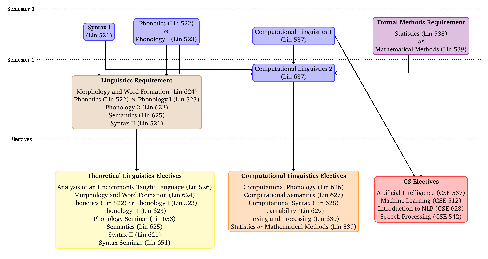

The Department of Linguistics at Stony Brook University offers a 3-semester M.A. in Computational Linguistics.
Computational linguistics is the study of language as a computational problem. There are two sides to this:
-
Applications: Getting computers to solve language-related tasks
This includes voice recognition, machine translation, chatbots, automatic text generation and summarization, web search, ad placement, stylistic analysis, and much more. -
Science: Computational analysis of language
Humans routinely solve complex problems involving natural language every day when they talk and listen to others. Computational analysis of the unconscious knowledge humans effortlessly use to process natural language has led to the discovery of laws underlying cognition. The science of language also informs the development of new computational techniques for solving language-related problems.
Both sides of computational linguistics have seen an enormous boom in recent years. Computational linguists are highly sought after in industry, and more and more positions in academia require a strong computational background. Our M.A. program in Computational Linguistics is designed to prepare students from a wide range of backgrounds for future careers in this booming field, be it as natural language engineers, data analysts, or as the first step towards a Ph.D. in Computational Linguistics.
Overview of the program
Our 3-semester program is designed to get students with little background in linguistics and programming to a level where they are ready to take on an internship after two semesters and enter the job market at the end of the third semester. As one of our graduates, you will have acquired core competencies in programming, algorithms and data structures, advanced mathematics (algebra, logic, statistics), linguistic theories of sound and grammar (syntax, phonetics, phonology) and the computational analysis of natural language (automata theory, complexity theory). You will also have practical experience with existing software solutions and toolkits that are widely used in the industry. This diverse, interdisciplinary skill set will allow you to take on a variety of positions in the IT sector. You will be able to evaluate existing solutions with respect to their linguistic adequacy as well as design and implement new solutions in a rapid prototyping environment. You may also act as the link between teams of linguists and software engineers in large-scale projects.
We put a strong emphasis on teaching not only techniques that are currently state-of-the-art, but also the theoretical foundations of computational linguistics. While the former are often short-lived, theory has a much longer half-time and will still help you in your job decades from now. We also integrate theoretical linguistics very tightly into our curriculum. We expect that as language technology progresses, the IT industry will shift its focus from simple solutions for very limited tasks to more challenging problems that require linguistically sophisticated models. A strong linguistics background will allow you to boldly move into these emerging areas and set yourself apart from software engineers and machine learning experts.
Degree requirements
The M.A. program takes 36 credits to complete (12 credits per semester), which divide into five broad categories
-
4 core courses that teach students the basics of computational and theoretical linguistics
-
a formal methods requirement that expands students’ skills in mathematics and data analysis; this is satisfied by taking 1 course from a predefined list
-
a linguistics requirement that introduces students to advanced topics in theoretical linguistics; this is satisfied by taking 1 course from a predefined list
-
4 electives from linguistics, computer science, or related areas such as computational sociology, cognitive science, and mathematics
-
a final project
The full list of courses is as follows:
-
Core courses (12 credits)
- Computational Linguistics 1 (LIN 537)
- Computational Linguistics 2 (LIN 637)
- Phonetics (LIN 522) or Phonology I (LIN 523)
- Syntax I (LIN 521)
-
Formal methods requirement (3 credits)
One (1) of the following:- Mathematical Methods in Linguistics (LIN 539)
- Statistics (LIN 538)
-
Linguistics requirement (3 credits)
One (1) of the following (course must not have been taken as part of the core curriculum):- Morphology and Word Formation (LIN 624)
- Phonetics (LIN 522)
- Phonology I (LIN 523)
- Phonology II (LIN 623)
- Semantics (LIN 625)
- Syntax II (LIN 621)
-
Electives (12 credits)
Four (4) courses, freely chosen from any of the following lists:-
Computer Science Electives
- Artificial Intelligence (CSE 537)
- Introduction to NLP (CSE 628)
- Machine Learning (CSE 512)
- Speech Processing (CSE 542)
-
Computational Linguistics Electives
- Computational Phonology (LIN 626)
- Computational Semantics (LIN 627)
- Computational Syntax (LIN 628)
- Learnability (LIN 629)
- Mathematical Methods in Linguistics (LIN 539)
- Parsing and Processing (LIN 630)
- Statistics (LIN 538)
-
Theoretical Linguistics Electives
- Analysis of an Uncommonly Taught Language (LIN 526)
- Morphology and Word Formation (LIN 624)
- Phonetics (LIN 522)
- Phonology I (LIN 523)
- Phonology II (LIN 623)
- Phonology Seminar (LIN 653)
- Semantics (LIN 625)
- Syntax II (LIN 621)
- Syntax Seminar (LIN 651)
-
Other Electives
- Psycholinguistics (PSY 520)
Courses not listed here can be counted as electives if this is explicitly stated in the course description, or if the student has written permission from the program director. No course that has been taken as part of the core curriculum or to satisfy the formal methods requirement or the linguistics requirement can be claimed as an elective.
-
-
Final Project* (6 credits)
Satisfied by successfully completing LIN 595
A brief description of each course can be found on the graduate bulletin’s course listing. The Linguistics Department provides more specific descriptions each semester, and lecture materials for some of the computational courses are available online.
Curriculum map and course progression
Students can start the program only in a Fall semester. The recommended course progression is as follows.
| Semester | Course 1 | Course 2 | Course 3 | Course 4 |
|---|---|---|---|---|
| 1 | CompLing 1 | Phonetics/Phonology | Syntax I | Formal methods requirement |
| 2 | CompLing 2 | Elective 1 | Elective 2 | Linguistics requirement |
| 3 | Elective 3 | Elective 4 | Final project |
The curriculum map shows the dependencies between these courses.

Extracurricular activities
In addition to their course work, students can participate in a large number of extracurricular activities related to computational linguistics. These include:
- Frontiers talks and colloquia that cover computational topics; watch our news feed for announcements
- Events sponsored by the Institute for Advanced Computational Science
- Q&A sessions with alumni and industry veterans
- Our Mathematical Linguistics Reading Group
- The NLP reading group in the Department of Computer Science
We also encourage all M.A. students to participate in social events hosted by the department, for instance colloquium receptions.
How to apply
For admission to the M.A. program in Computational Linguistics, the following are normally required:
-
Baccalaureate degree
A baccalaureate degree is required. Students must present evidence that such a degree will be awarded by the time they begin graduate work. A final transcript is also required prior to registration and should be mailed to:Michelle Carbone
Department of Linguistics
Room: S-201
Social & Behavioral Sciences Building
Stony Brook University
Stony Brook, NY 11794-4376 -
Cumulative GPA > 3.0
A minimum cumulative grade point average of 3.0 (or its foreign equivalent) on a four-point scale. If you have attended graduate school and obtained a master’s degree, and the GPA is over 3.00, then the GPA of the undergraduate school can be below 3.00 for regular admission. -
Three (3) letters of recommendation
Letters of recommendation from three former instructors are required. If the applicant already has pertinent work experience, e.g. as part of a software development team, some of these letters can also be from employers who are qualified to comment on the candidate’s qualifications. -
Graduate Record Examination (GRE)
There is no subject test for computational linguistics; the general test is all that is required. Please request that ETS send official score reports to Stony Brook University (School code 2548) and the Department of Linguistics (code 2903). Note that paper copies are neither required nor accepted by the Graduate School, only official score reports by ETS are required. -
Writing sample
The writing sample may take one of two forms:- a short paper written for a previous course, ideally related to language, mathematics, or computation, or
- a 2-page document describing a completed or ongoing programming project, including a link to an online repository hosting the code.
-
Curriculum Vitae or Resume
-
TOEFL Score
Non-native speakers of English must have obtained a minimum score of 600 (paper), 250 (computer), or 100 (iBT) on the TOEFL test. -
Acceptance
Students must be accepted by both the Department of Linguistics and the Graduate School.
For general information on the admissions process, see the Graduate bulletin.
Frequently asked questions
Character of the program
Why Stony Brook?
There are several computational linguistics programs across the country.
The program at Stony Brook distinguishes itself through a unique philosophy.
We believe that true progress in computational linguistics is impossible without a good scientific understanding of how language works.
Hence we strive to give students not just a computational toolbox to solve the problems of today, but also the linguistic know-how to develop new solutions for the problems of tomorrow.
Do I need a BA in Linguistics or Computer Science?
You need a BA, but we do not require a BA in a specific field.
Computational linguistics is very diverse, so suitable applicants can come from very different backgrounds.
Besides the obvious choices of linguistics and computer science, there’s also mathematics, philosophy, sociology, or digital humanities, to name just a few.
We do not rank applications based on how closely related the degree is to computational linguistics, but on how likely the applicant is to make for a great computational linguist.
So you teach to the lowest common denominator and if I already know linguistics and programming I won’t learn anything new?
No.
It is true that we aim to accommodate students from very different backgrounds.
But the courses are structured in such a way that more experienced students will learn new things, too.
For example, Computational Linguistics 1 acts as an introduction to Python in general, but it also covers specialized packages like NLTK that are specific to computational linguistics.
Similarly, Mathematical Methods covers important mathematical concepts, but links them to specific applications in computational linguistics that even a mathematics or computer science BA won’t have seen before.
But I already had several computational linguistics classes as an undergrad, your intro classes really are too basic for me!
We recognize that some exceptional students may already have an unusually rich background in certain areas.
All students will be closely mentored to ensure optimal progression through the 3 semesters of the program.
As part of this, every incoming student has to take basic skill assessment at the beginning of the first semester.
Based on your performance, you and the M.A program director then decide if it makes sense for you to deviate from the standard course progression and substitute a more advanced class for one of the introductory courses.
I don’t know any programming. Do I have a chance against the other applicants?
Yes.
First of all, keep in mind that computational linguistics involves lots of programming and computational data analysis, but not every computational linguistics job needs a software engineer. Often an intermediate level of programming is enough to be a productive team member, and this level is not that hard to reach.
That said, we do pay close attention to whether an applicant is likely to possess the formal reasoning skills that are indispensable for programming. But this does not mean that we are looking for previous programming experience. If you have completed a programming course, that is an obvious piece of evidence of your aptitude, but there’s also others: Did you enjoy syntax or formal semantics? What about a formal logic class? Or maybe statistics? A course that requires the ability to apply a formal system in a precise manner is a decent indicator of how hard it will be for you to learn some programming.
I hate math. Should I consider a career in computational linguistics?
It depends.
If your beef is with the typical number crunching of high school mathematics, then you do not need to worry because computational linguistics has very little of that.
However, if your dislike for mathematics stems more from a general dislike for abstract systems, then computational linguistics may not be to your liking.
Do you enjoy formal linguistics courses (syntax, semantics), programming, or analytical philosophy?
Then the odds are pretty good that you’ll handle the math-heavier parts of computational linguistics just fine.
Can I be enrolled in the program and still work a full-time job?
No.
Enrolled students are expected to spend a lot of time at the department —- not just for classes, but also for extracurricular activities, meetings with the program director, talks and social events, and so on.
Most of that takes place on weekdays between 9am and 6pm, which is incompatible with a regular work schedule.
But isn’t practical experience very important for landing a job?
True, and that is why we make a concerted effort to organize internships for students during the summer break between the second and third semester.
I want to be a research scientist, should I go for a Ph.D. instead?
A Ph.D. is a hard requirement for a researcher position in academia.
For research groups in industry a Ph.D. is usually a strong advantage, but not always necessary.
A reasonable strategy is to first get an M.A. in Computational Linguistics to test the waters.
If after one year you are absolutely sure that you enjoy doing research in this area, you can apply for admission into a Ph.D. program.
Can I transfer from the M.A. program into the Linguistics Ph.D. program at Stony Brook?
Yes and no.
You can apply for admission to the Ph.D. even if you are already enrolled in the M.A. program.
But your application will be evaluated as any other among the pool of applicants, being in the M.A. program does not grant you any special status.
Keep in mind that the Ph.D. program is very competitive and accepts only a small percentage of all applicants.
Students who want to pursue a Ph.D. program after their M.A. are encouraged to consult with the M.A. program director to identify several suitable programs across the country, and to apply to all of them to maximize their chances.
Application
So what does the ideal candidate look like?
There is no such thing as an ideal candidate because computational linguistics is a broad field that covers very different kinds of activities and job profiles.
The most important thing is that your application conveys that you have at least a rudimentary idea of what computational linguistics is like.
This means having had prior exposure to the idea that language can be studied as a formal system, comparable to what is covered in an introductory course in linguistics.
And it means having had some basic training in computational, algorithmic thinking, which covers a wide range of courses from philosophy over linguistics to computer science and mathematics.
Is there anything I can do to strengthen my application?
When applying to any graduate program, the most important thing is that you have a good idea of what the program is like.
You do not want to realize a few months in that the subject matter isn’t really to your liking.
Since computational linguistics combines linguistics and computer science, you should make sure to get some experience in each field.
If you have not had any contact with linguistics, take an intro class.
If you have never done any programming, advanced mathematics or formal reasoning course, try a one-week intro to programming.
Those will give you the required confidence that a computational linguistics M.A. is the right choice for you.
When should I apply?
Admission decisions are made on a rolling basis starting March 1, and no applications will be accepted after April 15.
Ideally, you will submit your application before the end of February.
Once all the slots for a given year are filled, it is very difficult to admit additional students even if their application is very strong.
For international students, an early application is particularly important because of the additional time that is needed for the visa process.
What should I submit as my writing sample?
The writing sample serves multiple purposes.
It demonstrates your ability to work on a larger project, to reason in a systematic fashion, and to clearly communicate your ideas to others.
Computational linguistics is unique compared to other disciplines because the project may not just take the form of a small research project but could also be built around a programming project.
This is why we accept two different kinds of writing samples (only one of the two should be submitted):
-
Scientific paper
This is a mini-research paper. It applies a specific scientific or mathematical technique to a small, narrowly defined topic. The writing sample will be evaluated based on the clarity of writing, strength of argumentation, correct usage of scientific methods, and appropriate citation of relevant literature. Length varies between subfields, but should not exceed 16 pages. -
Programming project
This is a short documentation (~2 pages) of a decently sized programming project the applicant has worked on or is currently working on. The documentation must include a link to the source code, ideally on a public hosting platform such as Github or Gitlab. If the applicant is not the sole author of the code, their specific contributions must be clearly indicated. The documentation should describe the general problem to be solved and important design aspects of the solution. It may also include future plans for new features.
Do GRE scores matter?
The GRE is required for every graduate program at Stony Brook University.
GRE scores are only a small part of the application package and not nearly as important as the letters of recommendation and the writing sample.
Do I have to take the GRE Mathematics Subject Test?
No, only the standard GRE is required.
Note that there is no subject test for computational linguistics.
Do I have to provide IELTS or TOEFL scores?
If your native or primary language is not English, English proficiency must be established based on the results of your TOELF or IELTS examinations.
For additional details, consult the Graduate Bulletin.
Is there any financial support to cover the tuition?
Unfortunately Stony Brook University only offers financial support for Ph.D. students at this point.
However, we hope to offer privately funded stipends for M.A. students in the future.
I still have some questions. Who should I contact?
For administrative questions regarding the application process, please contact Michelle Carbone:
michelle.carbone.1@stonybrook.edu
All other questions related to the Computational Linguistics M.A. program should be sent to the M.A. program director:
Thomas Graf
mail@thomasgraf.net